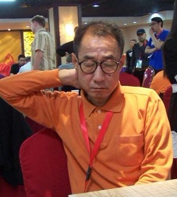

要是中村在赛后多留几天和十二金钗之中的棋手下十番棋该多好~
#1 要是中村在赛后多留几天和十二金钗之中的棋手下十番棋该多好~ 作者：梧桐风 发表时间：2012-5-3 21:45:11
十番棋才能比较充分的体现棋手双方的实力啊，要是中村在赛后多留几天和十二金钗之中的棋手下十番棋该多好，相信广大棋迷也非常期待这样的十番棋，当然，前提有的话。
新科世锦冠军冬瓜大神 ---十番棋-----战神中村茂 多诱人

想当名中村干瑞疏星连任名人时，我们还在没事摆石子玩，游戏人间，立志成有志青年。。。。
［ 一侠客一 于 2012-5-3 23:20:13 时花20金币送鲜花一朵］
#2 Re:要是中村在赛后多留几天和十二金钗之中的棋手下十番棋该多好~ 作者：烟雨淋晨尘 发表时间：2012-5-3 22:27:53
十二金钗都是谁？#3 Re:要是中村在赛后多留几天和十二金钗之中的棋手下十番棋该多好~ 作者：小红眼镜 发表时间：2012-5-3 22:57:48
回楼上。。这次比赛的十二个中国队的队员呗。。。。#4 Re:要是中村在赛后多留几天和十二金钗之中的棋手下十番棋该多好~ 作者：涩涩棋 发表时间：2012-5-3 23:05:39
好主意啊 那就有超多棋谱看了#5 Re:要是中村在赛后多留几天和十二金钗之中的棋手下十番棋该多好~ 作者：没事摆石子玩 发表时间：2012-5-4 0:27:57
洗洗睡吧 够格和中村下10翻棋的人 还没来到地球上只怕 他如果年轻 来中国的话 稍微有点技术支持 全国赛5连冠毫无压力。。。另外，瑞星10翻棋还是算了 太累
#6 Re:要是中村在赛后多留几天和十二金钗之中的棋手下十番棋该多好~ 作者：没事摆石子玩 发表时间：2012-5-4 1:31:56
我觉得楼主的想法是好的 大家也希望都跟中村交流几盘 毕竟这次中村打2台 仅仅能碰3个中国棋手。。但是10翻棋这个提法我觉得很有待商榷。。在围棋界 什么是10翻棋 一个时期内 2个最顶尖棋手为了争夺名人位置 是棋界第一人之争 才要下翻棋。。。那么放眼五子棋界，你觉得哪个人可以和中村争一争第一人的地位么？ 现在一些刚接触五子棋的人 可能觉得目前国内这些高手 全国冠军得主们 或者一些一个时期内或者近期内 成绩很突出的棋手 是不是就达到了中村的水平 需要和中村一决高下了。。这其实是大大的误区 中村过去的成就就不说了 现年53岁的高龄参加这次世界团体赛，5战全胜 他战胜了包括和安度亦师亦友的安次 包括 朱建锋梅凡这样的全国冠军得主，尤其是预赛的最后一盘，瑞星 真是可以说非常令人感动的一盘。白棋全盘保持着先手和主动，并抓住了唯一一次可能赢棋的机会 最终取胜 除了能感叹中村的传奇 神迹之外 我们还能说什么 已经不能用简单的钦佩来形容 就好像一个美妙的梦境 似真似幻 似乎遥不可及 只在梦中 却突然成为现实出现在眼前一样。这盘白棋你说是现代的棋手下得也毫不为过，中村也掌握了瑞星的这个定式 更重要的是 他下棋的理念跟得上技术的进步 你说白棋那种骗杀是小天下出来的 绝对有很多人相信 最后的抓44非常精妙。很多人感叹中村强大之余，并没有思考为什么 因为他是中村 他就应该这么强。你可以去稍微问问上了点年纪的棋手 年龄的增长究竟对保持竞技状态 有没有影响 有多大的影响 我相信曹冬现在的计算 已经不如他07年的巅峰 有的只是理念的提高 和综合实力的进步也许 说了这么多，只想说明一件事 对于中村，我们真的应该抱有十分的敬意和尊重，而不是把他作为一个衡量现代棋手实力的尺子 和12个人都下10翻棋 想想也搞笑 120盘。。。 合适么 中村用得着赢给我们看吗 他的实力早就被证明无数次了 我们应该抱着学习 交流的态度 和中村对弈。祝愿决赛阶段中国棋手好好发挥 下出风格 下出水平 也祝中村继续走出只属于他的棋！［ 山城刀客 于 2012-5-4 1:44:43 时花20金币送鲜花一朵］
［ 山城刀客 于 2012-5-4 1:45:03 时花20金币送鲜花一朵］
［ 有志青年 于 2012-5-4 6:48:15 时奖励此帖[金币加 100 威望加1］
［ 游戏人间 于 2012-5-4 9:30:52 时花20金币送鲜花一朵］
［ 雨一直下 于 2012-5-4 9:54:20 时花20金币送鲜花一朵］
［ 釣鱼岛岛主 于 2012-5-4 10:09:08 时花20金币送鲜花一朵］
［ 釣鱼岛岛主 于 2012-5-4 10:09:13 时花20金币送鲜花一朵］
［ 小红眼镜 于 2012-5-4 13:50:52 时花20金币送鲜花一朵］
［ 秋风雾语 于 2012-5-4 14:39:47 时花20金币送鲜花一朵］
［ 秋风雾语 于 2012-5-4 14:40:06 时花20金币送鲜花一朵］
［ 梧桐风 于 2012-5-4 15:09:49 时花20金币送鲜花一朵］
［ 梧桐风 于 2012-5-4 15:09:52 时花20金币送鲜花一朵］
［ 梧桐风 于 2012-5-4 15:09:54 时花20金币送鲜花一朵］
#7 Re:要是中村在赛后多留几天和十二金钗之中的棋手下十番棋该多好~ 作者：山城刀客 发表时间：2012-5-4 1:46:27
楼上写的真精彩，赞一个！！！#8 Re:要是中村在赛后多留几天和十二金钗之中的棋手下十番棋该多好~ 作者：小丸.net 发表时间：2012-5-4 7:19:12
你说，要是12个打一个怎么样。。。。算不算欺负人。。。。#9 Re:要是中村在赛后多留几天和十二金钗之中的棋手下十番棋该多好~ 作者：掌棋如烟 发表时间：2012-5-4 8:54:53
楼主美好的愿望而已不用太敏感了，就像我也常想着什么时候能连涨十级工资一样#10 Re:要是中村在赛后多留几天和十二金钗之中的棋手下十番棋该多好~ 作者：小帮帮 发表时间：2012-5-4 14:02:26
楼主愿望很美好，不过现在五子棋发展得这么快，中村颠峰时期，也不过如此吧，为什么总是喜欢夸大他的实力呢
#11 Re:要是中村在赛后多留几天和十二金钗之中的棋手下十番棋该多好~ 作者：没事摆石子玩 发表时间：2012-5-4 14:29:25
技术可以进步不错 但是有些东西是不会变的 现在的棋手到底有没有达到中村巅峰时期的程度 楼上不理解不怪你 你问问顶尖棋手 曹冬也行 大鱼也行 他们都是亲自和中村下过的人 他们会给你答案的 我钦佩中村不是因为他的名气 而是因为确实他的棋的高度别人没有企及 不知道不要乱说 其实国内有很多人都有一种盲目乐观的情绪 认为中国已经远远领先于世界了 呵呵 其实确实 从厚度来说 我们有一大批优秀的高手 还有研究团队 但是具体到一个个人呢 有没有那种绝代风华 堪称非常伟大的棋手 我认为还没有 不知道你们怎么看#12 Re:小帮帮【==Re:要是中村在赛后多留几天和十二金钗之中的棋手下十番棋该多好~==】 作者：秋风雾语 发表时间：2012-5-4 14:39:04
除了盲目，无知，找不到其他词语
#13 Re:要是中村在赛后多留几天和十二金钗之中的棋手下十番棋该多好~ 作者：三道 发表时间：2012-5-4 14:57:20
很多人，就是棋谱背的多吧。。。
#14 Re:三道【==Re:要是中村在赛后多留几天和十二金钗之中的棋手下十番棋该多好~==】 作者：梧桐风 发表时间：2012-5-4 15:06:42
引用：你也去背背然后拿个前十？搞笑
原文由 三道 发表于 2012-5-4 14:57:20 :很多人，就是棋谱背的多吧。。。
［此帖子已被 梧桐风 在 2012-5-4 15:07:07 编辑过］
#15 Re:要是中村在赛后多留几天和十二金钗之中的棋手下十番棋该多好~ 作者：一侠客一 发表时间：2012-5-4 15:09:49
确实很搞笑。。不像是下棋的。。